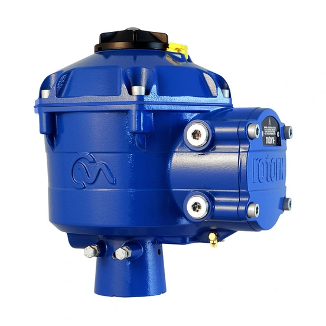

IQ3 Perform
IQT3 Perform - Standard Part-turn
Bộ truyền động part-turn thông minh, IP66/68, hỗ trợ SIL2/3, nền tảng kết nối Rotork App.
Xem mã & báo giá →Fast Group Engineering – đơn vị phân phối Rotork chính hãng tại Việt Nam. Cung cấp actuator, gearbox và thiết bị instrumentation Rotork xuất xứ châu Âu, nguồn gốc rõ ràng, đầy đủ CO/CQ, kèm tra cứu model và hỗ trợ kỹ thuật cho nhà máy, dự án.
Danh mục tổ chức theo dòng sản phẩm, range và model giúp đội ngũ kỹ thuật tra cứu nhanh. Xem toàn bộ 21 nhóm →
Điều khiển van chính xác, chẩn đoán thông minh, kết nối hệ thống nhà máy.
Khám phá dòng sản phẩm →Điều khiển tuyến tính và quay chính xác cho quá trình liên tục.
Khám phá dòng sản phẩm →Dải sản phẩm rộng cho HVAC, xử lý nước và ứng dụng công nghiệp.
Khám phá dòng sản phẩm →Giải pháp heavy-duty cho môi trường khắc nghiệt, yêu cầu an toàn cao.
Khám phá dòng sản phẩm →Hộp số multi-turn, part-turn cùng phụ kiện lắp đặt đồng bộ.
Khám phá dòng sản phẩm →Positioner, bộ điều khiển và thiết bị đo lường cho hệ thống van.
Khám phá dòng sản phẩm →Bộ truyền động part-turn thông minh, IP66/68, hỗ trợ SIL2/3, nền tảng kết nối Rotork App.
Xem mã & báo giá →
Bộ truyền động quay điều biến chính xác cho các ứng dụng điều khiển quá trình liên tục.
Xem mã & báo giá →
Bộ truyền động điện nhỏ gọn cho các hệ thống điều khiển van công nghiệp phổ biến.
Xem mã & báo giá →Rotork phục vụ hàng trăm nghìn van trên toàn cầu. Fast Group đồng hành cùng khách hàng Việt Nam trong các lĩnh vực mission-critical.
Actuator và thiết bị flow control cho upstream, midstream, downstream — VSP, PTSC và các nhà thầu EPC.
Điều khiển van trong nhà máy điện, xử lý nước, khử mặn và hệ thống cấp thoát nước.
Giải pháp tự động hóa van cho nhà máy hóa chất, lọc dầu và quá trình công nghiệp.
CCS, hydrogen, biofuel và năng lượng tái tạo — hỗ trợ mục tiêu giảm phát thải.
Fast Group Engineering cam kết cung cấp Rotork chính hãng, xuất xứ châu Âu, đầy đủ CO/CQ, bảo hành chính hãng, tư vấn chính xác và lead time vượt trội.
Fast Group Engineering cung cấp đầy đủ chứng từ nhập khẩu, CO, CQ và hỗ trợ kỹ thuật trọn vòng đời thiết bị.
Từ cách đọc nameplate đến lựa chọn actuator, mỗi bài viết giúp đội ngũ kỹ thuật đi từ nhu cầu thực tế tới đúng trang sản phẩm.
Xem 30 bài hướng dẫn → 01
01
Khi cần báo giá hoặc thay thế actuator Rotork, việc đầu tiên không phải là tìm mã tương đương trên mạng mà là đọc đúng nameplate trên thiết bị. Nameplate chứa manufacturer, range/model, order code (part number) và serial number — bốn lớp dữ liệu dễ bị nhầm lẫn
Đọc bài viết →06
IQ3 Pro là dòng actuator điện thông minh chủ lực của Rotork, dùng cho cả van multi-turn (IQ3 Pro) và part-turn (IQT3 Pro cùng nền tảng). Điểm khác biệt so với actuator điện thông thường là khả năng thu thập dữ liệu vận hành, cấu hình không cần mở nắp và nhiều
Đọc bài viết → 16
16
Skilmatic SI là dòng actuator điện-thủy lực tự chứa (self-contained electro-hydraulic) của Rotork, thiết kế cho ứng dụng fail-safe nơi an toàn chức năng (functional safety) là yêu cầu bắt buộc. Actuator kết hợp vận hành bằng điện với độ chính xác thủy lực và đ
Đọc bài viết →